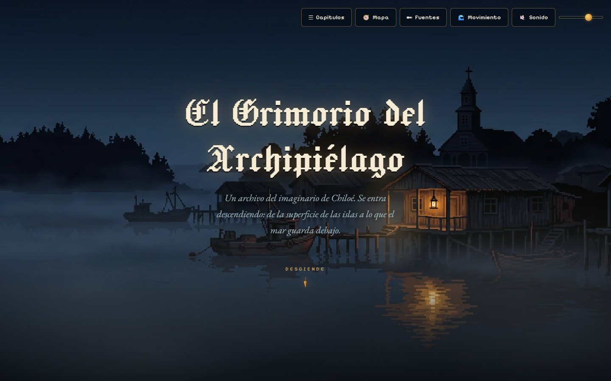
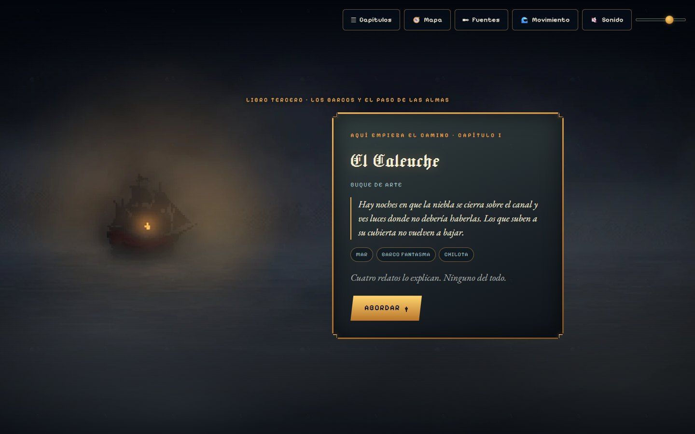
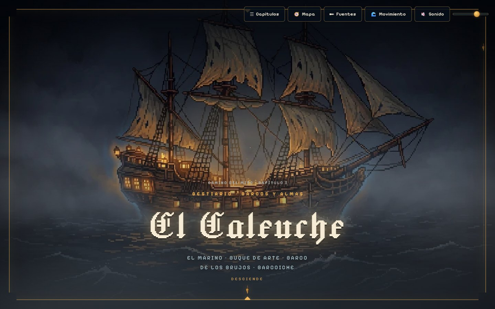
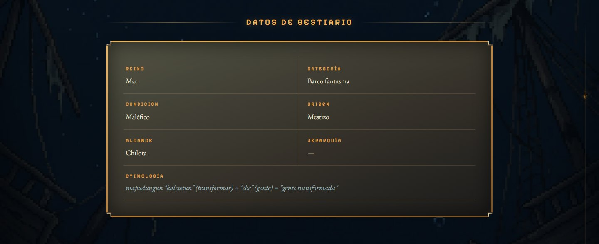
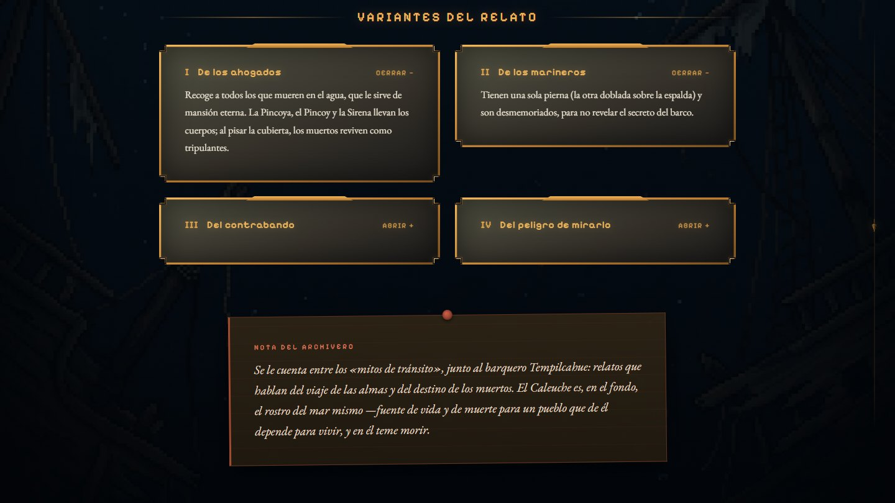
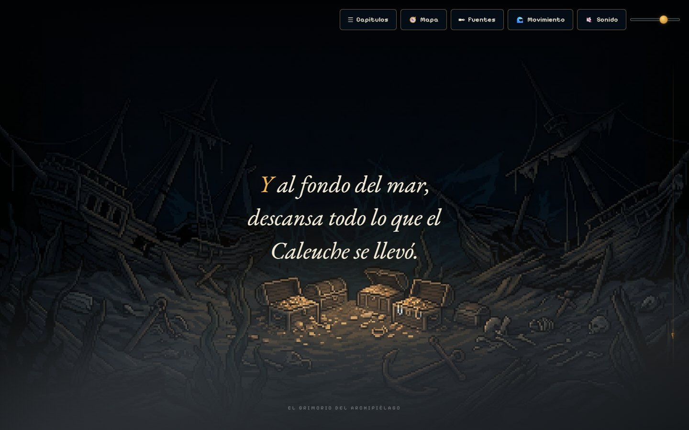
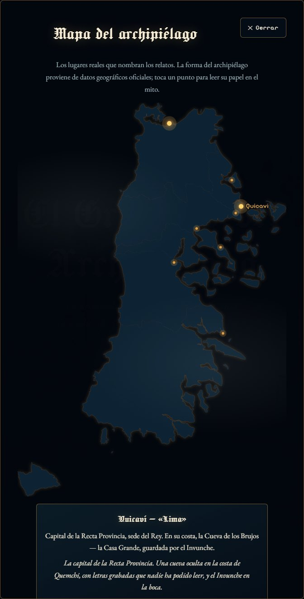
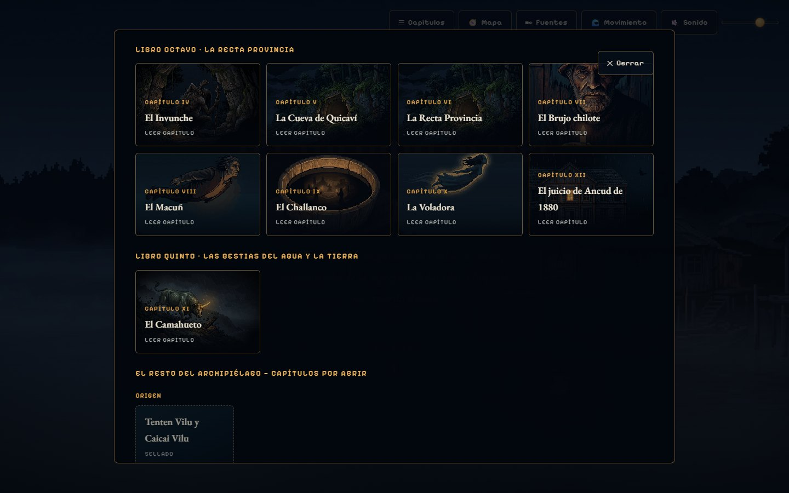
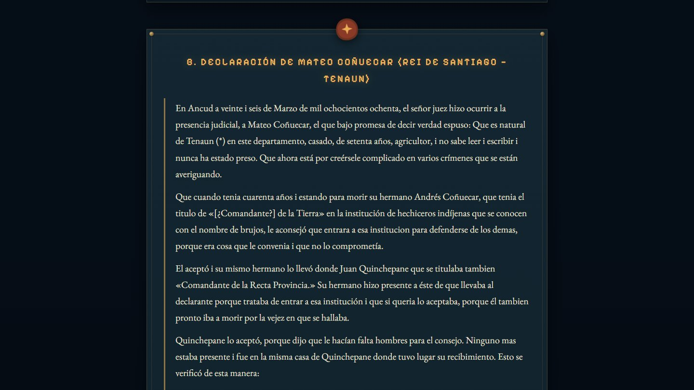
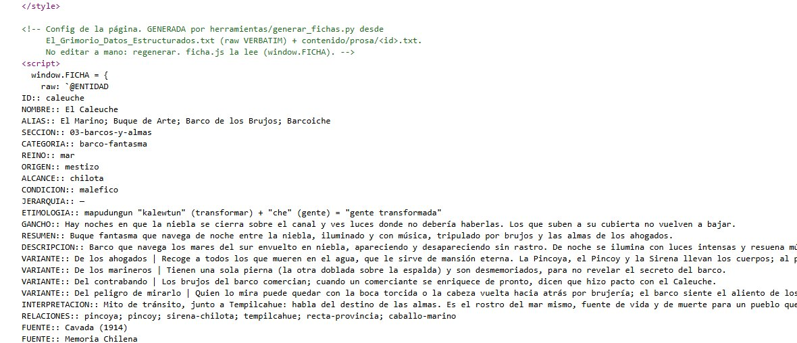

Para generar el PDF: abrir este archivo en Google Chrome → Imprimir → destino «Guardar como PDF» → papel A4 → márgenes «Predeterminados» → activar «Gráficos de fondo» y desactivar «Encabezados y pies de página». Los datos del postulante se completan desde un archivo local que no se publica. Esta nota no se imprime.
Fondart Regional 2027 · Línea Creación Artística: Innovación y Nuevos Formatos Creativos
El Grimorio del Archipiélago
Anexo visual de la Propuesta Creativa · El prototipo de la plataforma
1Qué está construido y qué produce el proyecto
El prototipo resolvió la parte que no se ve: cómo se recorre un archivo cultural como un descenso, cómo se publica una entidad sin tocar el motor y cómo se garantiza que lo publicado corresponda a su fuente. Lo que falta es la obra: el testimonio del territorio, la ilustración definitiva, la cartografía, el sonido y su encuentro con el público.
| Componente | Estado hoy | Qué produce este proyecto |
|---|---|---|
| Arquitectura del recorrido | Construida, navegable y probada | Se extiende al material levantado en terreno |
| Plantilla de ficha | Genérica, gobernada por datos: publicar una entidad no exige tocar el motor | Costo marginal de desarrollo por entidad: cero |
| Verificador de fidelidad a la fuente | Funcionando: el bloque de origen de cada ficha va embebido byte a byte en la página, y una herramienta comprueba que la prosa del relato exista palabra por palabra en el texto de referencia | Se aplica al testimonio nuevo |
| Corpus documental | 68 entidades registradas con vocabulario controlado, 108 citas y 70 enlaces; 40 fuentes indexadas y 12 archivadas | Se incorpora el testimonio levantado en cinco comunas, con consentimiento y atribución elegida |
| Ilustración | Piezas de prototipo, provisionales | Ilustración definitiva, de autoría humana contratada por convocatoria abierta a ilustradoras e ilustradores del archipiélago y la región |
| Cartografía | Mapa del archipiélago construido y navegable: los lugares reales que nombran los relatos, sobre geometría oficial, con un punto por lugar y su papel en el mito | Cartografía mitológica en SIG libre: georreferenciación del corpus levantado en terreno, capa de variantes y distinción entre lugares con respaldo verificado y lugares que la tradición menciona sin localización precisa |
| Capa sonora | Ambiente generativo por síntesis en el navegador, más música de biblioteca con licencia libre en seis páginas | Paisaje sonoro grabado en terreno, más composición y montaje contratados por convocatoria abierta |
| Accesibilidad | Implementada y verificada | Se suma la lectura en voz de los textos |
| Exhibición | No existe | Cinco jornadas en cinco comunas, con 175 personas y cinco espacios comprometidos por carta |
El prototipo prueba que la arquitectura funciona y que el costo de cada entidad nueva es editorial y artístico, nunca de desarrollo. Por eso el presupuesto no pide software: pide terreno, ilustración, cartografía, sonido y exhibición.
2Dirección de arte
La identidad visual del proyecto está definida y aplicada en todo el prototipo. Su dirección se resume en cuatro términos: editorial marítima, gótico insular, archivo cultural y museo nocturno. Sus materias son el mar, la niebla, el bosque, el bronce y el óxido. La paleta, la regla de una sola luz cálida, la geometría y el peso de cada pieza, y el rótulo de recreación artística son el marco obligatorio de la ilustración definitiva que se encarga (sección 3). La técnica no es única: se asigna por función de la pieza y la ajusta la dirección de arte (sección 2.5). Las piezas cambian; ese marco, no.
2.1 · Paleta cromática
La paleta reproduce la experiencia lumínica del archipiélago nocturno: una gradación abisal de azules muy oscuros, sobre la cual existe una sola fuente de luz cálida. Son los valores que usa hoy el sitio.
| Muestra | Código | Nombre | Función |
|---|---|---|---|
| #02060c | Abismo | Fondo base del sistema; el punto más profundo del descenso. | |
| #050d18 | Abismo secundario | Transición entre el abismo y el mar abierto. | |
| #081726 | Profundo | Zona de mar abierto; fondos de capítulos marinos. | |
| #0e2433 | Mar intermedio | Paso de la gradación hacia la superficie. | |
| #15384a | Mar | Límite superior de la gradación; superficies iluminadas por la luna. | |
| #f2b65a | Ámbar | La única luz cálida: faroles, velas, oro; jerarquía y acción. | |
| #e0a24a | Ámbar suave | Estados secundarios de la luz cálida. | |
| #b9772b | Bronce | Marcos, placas y botones. | |
| #a04a30 | Óxido | Notas del archivero y advertencias; el único acento no ámbar. | |
| #6e3120 | Óxido profundo | Sombra del óxido. | |
| #ece4d2 | Hueso | Texto principal sobre fondo abisal (contraste AA verificado). | |
| #aab0ad | Tinta secundaria | Texto de apoyo. | |
| #9fb6bd | Espuma | Texto secundario, atribuciones y metadatos. |
2.2 · El principio rector: una sola luz cálida
Cada escena tiene una única fuente de luz cálida: el farol del palafito en la superficie, las luces del buque fantasma, el cabello de la Pincoya —que es la única luz de su playa—, la vela en la boca de la cueva del Invunche, el cuerno dorado del Camahueto en plena tormenta. La regla dirige la mirada hacia el corazón narrativo de cada imagen y hace gobernable la coherencia de un bestiario extenso. Llega al detalle: durante el desarrollo se descartaron partículas ambientales de color ámbar porque habrían sembrado varias luces cálidas en pantalla.
2.3 · Tipografía y su función
| Familia | Rol | Uso |
|---|---|---|
| Jacquard 24 | Display | Nombres de entidades y títulos mayores; evoca la letra gótica de los grimorios sin sacrificar legibilidad en pantalla. |
| EB Garamond | Cuerpo de lectura | Toda la prosa documental, con su itálica; serif clásica en cuerpo generoso: no baja de 17 píxeles efectivos en teléfono y ronda los 19 en escritorio. |
| Pixelify Sans | Interfaz | Botones, etiquetas, datos de bestiario y microtexto: el registro «píxel» de la capa interactiva. |
Las tres familias son de licencia libre y se sirven autoalojadas (ocho archivos), sin depender de servicios externos.
2.4 · Superficies y marcos
Las superficies del sistema son placas de bronce y agua abisal; nunca pergamino ni textura de papel. Los marcos no se redondean: llevan esquina cortada, el gesto de una placa metálica y no el de una tarjeta. Se evitan deliberadamente las tarjetas repetidas, el exceso de sombras y la apariencia de aplicación corporativa. Dentro de la ficha, cada registro tiene su forma: la placa de bronce para los datos de bestiario, los cajones de archivo para las variantes y el acento de óxido, con su pin, para la nota del archivero, que así queda visualmente separada del relato.
2.5 · El registro visual del prototipo
El prototipo se construyó en píxel art de paleta controlada, y fue la decisión de producción correcta para lo que había que probar: permitió levantar un mundo entero con recursos acotados, verificar que doce capítulos se sostienen con la misma gramática visual, y medir peso y rendimiento sobre el sitio publicado.
El proyecto no compromete una técnica única. Fijarla estrecharía sin necesidad la convocatoria a ilustradoras e ilustradores del archipiélago, cuyos oficios son diversos. La orientación vigente asigna la técnica por función de la pieza —ilustración pintada de autoría humana en los portales de capítulo, píxel art de alta densidad en el entorno del descenso— y esa orientación la ajusta la dirección de arte con el material que efectivamente se levante.
Lo que se mantiene sin excepción, cualquiera sea la técnica: la paleta abisal, una sola luz cálida por escena, la geometría y el peso de cada pieza, y el rótulo de recreación artística. Sobre eso no hay negociación.
3Especificación de ilustración
La plataforma no encarga «una ilustración por criatura»: encarga piezas con una función y una medida definidas. El pipeline del proyecto tiene cinco slots, y cada uno se produce y se sirve de manera distinta.
| Slot | Proporción | Medida | Rol en la ficha | Tratamiento | Peso servido |
|---|---|---|---|---|---|
| hero enmarcado | 16:9 | 917 × 512 | Portal del capítulo a pantalla completa, bajo el marco de bronce; pieza de menor resolución | grilla reducida, color pleno | objetivo ≤ 60 KB (hoy 50 – 77 KB) |
| hero a sangre | 16:9 | 1800 × 1005 | Portal a pantalla completa, bajo el marco de bronce, en resolución de fondo | color pleno | 70 – 155 KB |
| lamina | 2:3 retrato | 565 × 842 | Alternativa al portal: se cuelga enmarcada sobre el fondo | enmarcada, grilla y paleta reducida | 16 – 55 KB |
| descenso | 9:16 vertical | 1005 × 1800 | Fondo del cuerpo del capítulo. Es el slot que sirve el descenso en teléfono | color pleno | 96 – 162 KB |
| cierre | 16:9 | 1800 × 1005 | Pantalla final del capítulo, con su frase propia | color pleno | 85 – 150 KB |
Existe además un slot card de proporción 1:1, definido en el pipeline y hoy sin producir. No se encarga todavía.
La regla de tratamiento. Los fondos a pantalla completa —descenso, cierre, hero a sangre y los fondos de umbral— no pasan por reducción de grilla ni cuantización de paleta: se sirven a 1800 píxeles por el lado mayor, a color pleno, con remuestreo de alta calidad. Solo el hero de 917 × 512 y la lamina se reducen: el hero pasa por reducción de grilla y conserva el color pleno; la lámina pasa por reducción de grilla y además por paleta reducida. Son los tratamientos del pipeline con que se probó el prototipo; la dirección de arte los ajusta a la técnica de cada pieza encargada, sin tocar su geometría ni su peso. El criterio de aceptación de una pieza a pantalla completa es visual, no su peso: si una optimización se nota a simple vista, se revierte y se restaura desde el archivo crudo, que nunca se borra.
Zona segura del portal. El portal se sirve también en teléfono, recortado a su franja central. Medido sobre el prototipo con una pieza de 917 × 512: un teléfono de proporción 9:16 deja a la vista unos 270 píxeles centrales, y uno más alargado, de 390 × 844, unos 220. La entidad, su luz y todo lo que la identifique van dentro de esa franja; lo que quede fuera es paisaje y tiene que poder perderse sin que la imagen deje de leerse. Es el caso que muestra la última estación del recorrido.
Zona de respiro del cierre. La pieza de cierre lleva encima la frase propia de la entidad. En su banda central el contraste baja y no hay detalle fino, para que la frase, en tinta clara, se lea sobre la pieza sin necesidad de caja.
La paleta es cerrada y obligatoria. No se altera, no se amplía con colores ajenos y no se sustituye:
- Gradación abisal: #02060c abismo · #050d18 · #081726 profundo · #0e2433 · #15384a mar
- Espuma: #9fb6bd
- Luz ámbar: #f2b65a la luz · #e0a24a suave · #b9772b bronce
- Óxido: #a04a30 único acento no ámbar · #6e3120 profundo
- Tinta: #ece4d2 hueso · #aab0ad secundaria
Una sola luz cálida por escena, sin excepción. El farol del palafito, las luces del buque, el cabello de la Pincoya, la vela en la boca de la cueva, el cuerno del Camahueto. Nada más en ámbar. No es una preferencia: es lo que hace que la pieza número sesenta y ocho pertenezca al mismo mundo que la primera. La disciplina llega al detalle —durante el desarrollo se descartaron partículas ambientales ámbar precisamente porque habrían sembrado segundas luces en pantalla.
La técnica queda abierta. El encargo fija el mundo —paleta, luz, geometría, peso y rótulo— y no la técnica con que se resuelve. Cada ilustradora o ilustrador entra con su propio registro.
Prohibido en toda pieza: pergamino o textura de papel; una segunda fuente de luz cálida; texto incrustado en la imagen —los nombres, citas y datos son HTML, y así se mantienen legibles, seleccionables, accesibles al lector de pantalla y traducibles.
Entrega. Archivo maestro sin pérdida en la medida del slot o mayor; texto alternativo escrito por quien ilustra; y ficha de encargo firmada que registra qué relato origina la pieza, qué fuente lo respalda y qué decisión interpretativa tomó la dirección de arte. El par WebP + PNG de publicación lo genera el proyecto a partir del maestro; no lo entrega el ilustrador.
Derechos. Cada pieza se contrata por escrito con acuerdo expreso sobre las utilizaciones autorizadas, se acredita nominalmente a su autor en la ficha correspondiente y se rotula en la plataforma como recreación artística contemporánea, nunca como iconografía tradicional documentada.
4Estructura de navegación: el descenso
La plataforma se organiza como un descenso: se entra por la superficie del archipiélago y se baja, capítulo a capítulo, hasta el lecho del mar, donde se abren las puertas del archivo de consulta. Los capítulos se agrupan por los Libros del grimorio literario del proyecto, y al cruzar de un Libro a otro el recorrido anuncia el umbral del nuevo Libro.
Libro Tercero · Libro Segundo · Libro Cuarto
Libro Octavo · La Recta Provincia
Libro Quinto · Las bestias del agua y la tierra — y el cierre del Libro Octavo
cada capítulo termina en «El camino continúa», que presenta al siguiente con su cita de anzuelo
El orden de los capítulos es un dato del sistema, no está fijado en el código: la curaduría puede reordenarlo sin costo técnico, y el orden actual es provisional. Cinco controles acompañan todo el recorrido desde una botonera fija con etiquetas legibles: Capítulos (la carta de capítulos, con los publicados y las entidades aún selladas, sin enlaces muertos), Mapa (los lugares reales que nombran los relatos), Fuentes (la cara pública del sistema bibliográfico), Movimiento (pausa toda animación) y Sonido (apagado por defecto). Cada ficha es además una página independiente, con dirección propia, citable y enlazable.
5El recorrido, estación por estación
Cada estación de este recorrido es un enlace. El documento se puede leer, pero está hecho para recorrerse.
Las capturas se tomaron del prototipo publicado en septiembre de 2026. En todas ellas la ilustración es pieza de prototipo, no la definitiva; el resto de la pantalla —arquitectura, placas, cajones, marcos, tipografía, mapa y controles— es el sistema real.
1La superficie
La portada del descenso: el título, una bajada breve y la indicación «desciende» con la plomada de sonda, el instrumento náutico que guía todo el recorrido. Arriba, la botonera que acompaña cada pantalla. Al bajar, la niebla deriva y la escena se hunde.

2El umbral de capítulo
El primer capítulo se anuncia con su Libro y una placa de bronce: el nombre de la entidad, su cita de anzuelo verbatim, las etiquetas del vocabulario controlado y un botón con el verbo propio del capítulo, «Abordar».
lukas-paredes.github.io/grimorio-del-archipielago/index.html#umbral-capitulo También se llega bajando una pantalla desde la portada.

3Una ficha completa, de arriba a abajo
La unidad que se repite. Una misma plantilla, gobernada por datos, genera las fichas del recorrido: portal a pantalla completa, cita de anzuelo, placa de datos de bestiario, relato verbatim con capitular, variantes en cajones de archivo, nota del archivero, origen del mito, piezas relacionadas, fuentes y pantalla de cierre, seguida de «El camino continúa». Con el control de movimiento en pausa todo se muestra estático y completo.
lukas-paredes.github.io/grimorio-del-archipielago/caleuche.html





4El mapa del archipiélago
Los lugares reales que nombran los relatos, sobre la silueta de las comunas de la provincia de Chiloé trazada con geometría oficial y simplificada sin redibujar. Hoy sitúa lo documentado: ocho lugares con fuente verificada, entre ellos Quicaví, capital de la Recta Provincia, y Ancud, sede del juicio de 1880. Cada punto abre su papel en el mito, un fragmento verbatim del corpus, su fuente y, cuando existe, el acceso a la ficha.
El mapa ya aplica el criterio del archivo: los lugares que circulan sin fuente citable no se mapean, y cuando las declaraciones de 1880 discrepan sobre el mapa en clave, el mapa lo advierte y remite a las variantes de cada ficha.
En qué se convierte. El proyecto le suma la georreferenciación del corpus levantado en terreno y la capa de variantes, distinguiendo los lugares con respaldo verificado de los que la tradición menciona sin localización precisa.
lukas-paredes.github.io/grimorio-del-archipielago/ Botón «Mapa» de la botonera, disponible en todas las páginas del recorrido.

5La carta de capítulos
El índice del recorrido, accesible desde cualquier pantalla. Muestra los capítulos publicados agrupados por Libro y numerados en romanos y, a continuación, el resto del archipiélago: las entidades aún no publicadas como placas selladas, sin un solo enlace muerto. Se cierra con el botón, con la tecla Escape o pulsando fuera.
lukas-paredes.github.io/grimorio-del-archipielago/index.html#capitulos Esta dirección abre la carta directamente.

6El lecho y las puertas del archivo
El fin del recorrido narrativo y la bisagra con la consulta: tras la caída, sobre el fondo del lecho marino, se abren las puertas «Entrar al archivo», Bestiario, Mundos, Recta Provincia y Cosmología, además del regreso al inicio y el acceso a todos los capítulos.
lukas-paredes.github.io/grimorio-del-archipielago/lecho.html Las puertas aparecen al bajar una pantalla.

7El expediente de la Recta Provincia
El capítulo XII y cierre del descenso: el juicio de Ancud de 1880, antecedente histórico presentado desde su fuente primaria. Las piezas del proceso se transcriben verbatim del folleto editado por Ponce Hermanos en 1908, con su ortografía de época y aparato crítico: marco del proceso, declaraciones y sentencia, cada bloque con su fuente. Al final, el Epílogo con la sentencia de segunda instancia y las lecturas académicas citadas con autor, año y página.
lukas-paredes.github.io/grimorio-del-archipielago/juicio-1880.html


8Fuentes y método
La cara pública del sistema de fuentes. Cada obra aparece con su referencia completa, su estado —en el archivo del proyecto, por conseguir, consulta en biblioteca— y las fichas que respalda, enlazadas. Las de acceso abierto llevan a su original oficial; las demás se citan con el lugar donde consultarlas. La plataforma no aloja documentos para descarga.
lukas-paredes.github.io/grimorio-del-archipielago/ Botón «Fuentes» de la botonera, disponible en todas las páginas del recorrido.

9El verificador de fidelidad
Cada ficha lleva embebido, byte a byte, el bloque de origen de su entidad tal como consta en el corpus documental, y la página se construye a partir de él. Cualquiera puede abrir el código fuente y cotejar palabra por palabra lo que lee en pantalla con su registro de origen. En el repositorio público, una herramienta comprueba además que la prosa del relato exista literalmente en el texto de referencia del proyecto.
lukas-paredes.github.io/grimorio-del-archipielago/caleuche.html En el navegador de escritorio, «Ver código fuente de la página» (Ctrl+U) y buscar window.FICHA.

10La misma ficha en teléfono
La ficha de El Caleuche a 390 píxeles de ancho: una columna, sin desplazamiento horizontal, botonera con etiquetas legibles y objetivos táctiles amplios. El nombre, los alias y la indicación de descenso quedan en la parte baja de la pantalla, sobre la ilustración.
El portal de escritorio llega al teléfono recortado a su franja central. Es el caso que motiva la zona segura de la especificación de ilustración (sección 3): la pieza definitiva se compone para que ese recorte siga leyéndose.
lukas-paredes.github.io/grimorio-del-archipielago/

6Ejemplo real de ficha: El Caleuche
El núcleo de la ficha de El Caleuche, con su contenido real y del mismo registro estructurado que la ficha publicada (estación 3): relato verbatim, variantes por separado e interpretación aparte. La ficha publicada suma las variantes II a IV y «De dónde nació el mito».
Camino del mito · Capítulo I — Bestiario · Barcos y almas
El Caleuche
El Marino · Buque de Arte · Barco de los Brujos · Barcoiche
Hay noches en que la niebla se cierra sobre el canal y ves luces donde no debería haberlas. Los que suben a su cubierta no vuelven a bajar.
- Reino
- Mar
- Categoría
- Barco fantasma
- Condición
- Maléfico
- Origen
- Mestizo
- Alcance
- Chilota
- Jerarquía
- —
- Etimología
- mapudungun "kalewtun" (transformar) + "che" (gente) = "gente transformada"
El relato
El Caleuche es un barco que navega los mares del sur envuelto en niebla, apareciendo y desapareciendo sin dejar rastro. De noche se ilumina con luces intensas —algunos dicen que con velas rojizas— y en su cubierta resuena música festiva y se celebran grandiosos bailes. Lo tripulan brujos poderosos y las almas de los náufragos ahogados.
Variantes del relato
I · De los ahogados
Recoge a todos los que mueren en el agua, que le sirve de mansión eterna. La Pincoya, el Pincoy y la Sirena llevan los cuerpos; al pisar la cubierta, los muertos reviven como tripulantes.
Nota del archivero
Se le cuenta entre los «mitos de tránsito», junto al barquero Tempilcahue: relatos que hablan del viaje de las almas y del destino de los muertos. El Caleuche es, en el fondo, el rostro del mar mismo —fuente de vida y de muerte para un pueblo que de él depende para vivir, y en él teme morir.
Fuentes de la ficha: Cavada (1914) · Memoria Chilena
Y al fondo del mar, descansa todo lo que el Caleuche se llevó.
7Compromiso documental
La regla constitutiva del proyecto es simple: nada inventado. En concreto:
- Prosa verbatim. Los relatos de cada ficha se copian literalmente del corpus documental del proyecto, construido sobre fuentes clásicas y contemporáneas de la mitología chilota (Cavada, 1914; Quintana, 1972; García Barría; Núñez, 2022 —Servicio Nacional del Patrimonio Cultural—, entre otras). El bloque de origen va embebido en cada página y una herramienta comprueba que la prosa del relato exista palabra por palabra en el texto de referencia.
- Variantes mostradas, no zanjadas. Cuando las fuentes discrepan —por ejemplo, sobre el origen del niño del Invunche, o sobre las cifras del proceso de 1880—, la plataforma expone las versiones por separado, cada una con su fuente, sin elegir entre ellas; en el caso del Invunche lo dice expresamente: «No hay acuerdo». La discrepancia es parte del patrimonio.
- Distinción de registros. El sistema distingue siempre entre tradición documentada, variante, interpretación curatorial, antecedente histórico, recreación artística y contenido pendiente de verificación. Las interpretaciones se presentan como «Nota del archivero», visualmente separadas del relato.
- Encuadres éticos. Los relatos sensibles llevan advertencia explícita antes del texto (caso Invunche: «Se conserva sin suavizar, como testimonio»).
- Lo no verificable no se publica. Las citas académicas se cotejan contra el documento archivado y se publican con autor, año y página; lo que no puede verificarse queda pendiente. Por la misma regla, los lugares que circulan sin fuente citable no entran al mapa.
- Fuentes públicas. Cada ficha lista sus fuentes, y el panel «Fuentes» declara el estado de cada obra y las fichas que respalda.
8Convocatorias abiertas y vitrina del territorio
La dirección de arte —sistema visual, láminas patrón de referencia y control de coherencia pieza por pieza— es parte del equipo ejecutor.
La ilustración definitiva se adjudica por convocatoria abierta remunerada a ilustradoras e ilustradores del archipiélago y la región, con pago contra entrega de cada pieza aprobada por la dirección de arte y acreditación nominal en la ficha correspondiente.
La composición y el montaje de la capa sonora se contratan por una segunda convocatoria abierta a músicos, sonidistas y colectivos del archipiélago y la región. Los paisajes sonoros son grabaciones propias del territorio: el trabajo contratado los edita y compone sobre ellos, sin reemplazarlos.
Quien conduce la dirección de arte no postula a la convocatoria que adjudica.
Vitrina permanente del territorio
El proyecto incorpora a la plataforma una vitrina permanente del territorio: una sección de colaboradores donde ilustradores, artistas y cultores del archipiélago de Chiloé, Calbuco y Maullín exponen su obra con crédito destacado, reseña biográfica y enlaces a sus propios espacios. El compromiso editorial es de incorporación progresiva: las ilustraciones de autoría local reemplazan a las piezas de prototipo y fijan el estándar visual del archivo, transformando la plataforma en un escaparate activo para el talento del territorio y no en un repositorio cerrado. La vitrina constituye, en sí misma, una acción de difusión y circulación para los propios creadores locales.
El equipo ejecutor y sus roles se detallan en la Propuesta Creativa.
9Accesibilidad
La plataforma está pensada con el mismo cuidado para el público joven y para el público de 40 a 70 años. Medidas implementadas y verificables en el prototipo:
- Tipografía generosa: cuerpo de lectura fluido que no baja de 17 píxeles efectivos en teléfono y ronda los 19 en escritorio; los controles llevan etiqueta legible, no solo icono («Capítulos», «Mapa», «Fuentes», «Movimiento», «Sonido»).
- Contraste: paleta de texto verificada contra el estándar WCAG AA sobre los fondos abisales.
- Navegación obvia: botonera fija con botones grandes; objetivos táctiles de 44 píxeles o más; la carta de capítulos siempre a un toque; sin gestos ocultos.
- Movimiento bajo control del visitante: el botón «Movimiento» pausa toda animación —niebla, luces, sedimento, parallax y revelado progresivo— y se respeta la preferencia de movimiento reducido del sistema operativo: con ella activa, todo se muestra estático y completo, nunca oculto.
- Sonido opcional: apagado por defecto, sin reproducción automática; se enciende únicamente con el botón «Sonido» y la preferencia se recuerda.
- Teclado y lector de pantalla: recorrido completo por teclado (la botonera es la primera parada del tabulador), diálogos con semántica nativa y cierre con Escape, imágenes de ambiente marcadas como decorativas y texto alternativo en los portales.
- Teléfono: verificado a 390 píxeles sin desplazamiento horizontal.
10Ficha técnica de la plataforma
| Aspecto | Detalle |
|---|---|
| Arquitectura | Sitio estático: HTML, CSS y JavaScript clásico. Sin frameworks, sin gestores de paquetes, sin proceso de compilación, sin base de datos y sin dependencias de pago. |
| Contenido | Gobernado por datos: las entidades viven en registros estructurados con sus fuentes, y los capítulos y su orden son datos, no código. Las fichas se generan desde el corpus; el Expediente de 1880 es la única página compuesta a mano. Herramientas internas comprueban la fidelidad verbatim de la prosa. |
| Rendimiento | Ilustraciones en WebP con respaldo PNG; los fondos de pantalla completa del prototipo pesan entre 20 y 165 KB. Una página de capítulo se transfiere completa en 226 a 690 KB según su ilustración (medición de septiembre de 2026). Precarga de la imagen de portada y de las tipografías principales, y animaciones delegadas al compositor del navegador. |
| Sonido | Atmósfera generativa por síntesis en el navegador (Web Audio API), con mezclas por zona —mar, bosque, cueva, tormenta— y un filtro de profundidad ligado al desplazamiento. Seis pistas musicales de biblioteca con licencia libre, normalizadas y en bucle, que se descargan solo cuando el visitante enciende el sonido. |
| Alojamiento | GitHub Pages, sin costo y con certificado HTTPS. La migración a dominio propio .cl está documentada en el repositorio. |
| Mantención | Plataforma de baja mantención: publicar una entidad nueva no requiere tocar el motor (procedimiento documentado paso a paso). |
| Costo operativo anual | Hoy, cero. Con dominio propio, solo su renovación (estimada en unos $11.000 CLP al año). Sin licencias ni servicios de suscripción. |
| Código abierto | El repositorio es público: corpus, fuentes, herramientas y el historial completo de cambios pueden revisarse. |
| Compatibilidad | Navegadores modernos de escritorio y móvil (Chrome, Edge, Firefox, Safari). Las capas de atmósfera —transiciones, sonido, movimiento— son opcionales y degradan con dignidad: la navegación se apoya en enlaces estándar y la transición de niebla está construida para no bloquear jamás el acceso al contenido. |
11Estado actual del prototipo
11.1 · Lo que existe y puede visitarse hoy
- Doce capítulos publicados y navegables, de El Caleuche al juicio de Ancud de 1880, encadenados por «El camino continúa».
- El camino completo: portada-descenso, umbral de capítulo, umbral de Libro, carta de capítulos con las entidades publicadas y selladas, el lecho con las puertas del archivo y el archivo de consulta.
- Mapa del archipiélago con lugares de fuente verificada, y panel público de fuentes.
- Sonido y atmósfera: ambiente generativo opcional por zona y profundidad; niebla, parallax y revelado progresivo, todos pausables.
- Base documental: 68 entidades registradas con vocabulario controlado, 108 citas de fuente, 70 enlaces y 47 variantes documentadas; herramienta de verificación verbatim.
11.2 · Cómo se publica una entidad
La incorporación de cada entidad sigue un procedimiento documentado en el repositorio: ilustraciones normalizadas por tipo de pieza → prosa verbatim del corpus, validada por la herramienta de verificación → publicación de la ficha → alta del capítulo en los datos del camino. Ningún paso modifica el motor de la plataforma.
11.3 · Un prototipo que se adapta
El prototipo no se replica: se adapta. Partes de lo que muestra este anexo van a cambiar o desaparecer. Las piezas de prototipo se reemplazan por ilustración definitiva; la música de biblioteca da paso al paisaje sonoro grabado en terreno; el orden del descenso es provisional, y cuántas fichas se publican lo define la curaduría con el material levantado en terreno. Su valor es haber probado la arquitectura, no haber fijado el resultado.
El plan de trabajo del proyecto —de abril de 2027 a marzo de 2028, en tres etapas— se presenta en la postulación; este anexo no lo repite.